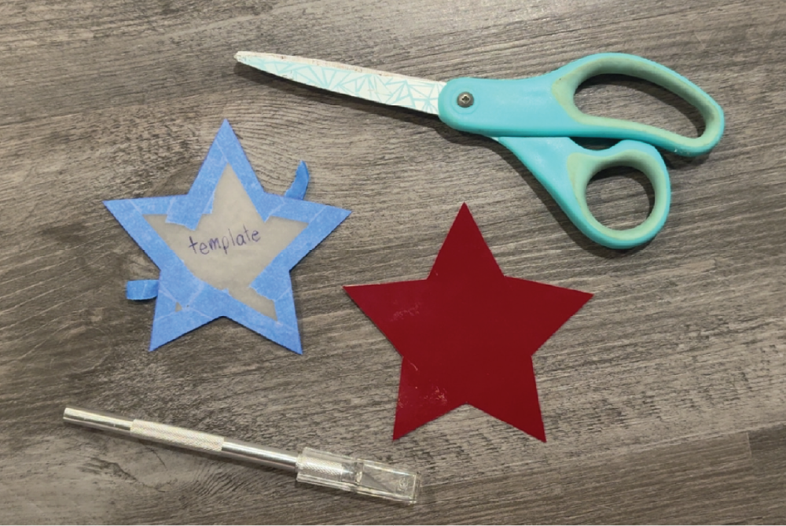

Step Four: Cut Vinyl

Now that your design has been traced onto the vinyl, carefully remove the template. Use your traced lines as a guide and cut out the shape of your sticker, just like you did when creating the template. For smaller details, inside cuts, or more complex areas of the design, use an X-Acto knife to make more precise cuts and achieve cleaner edges.